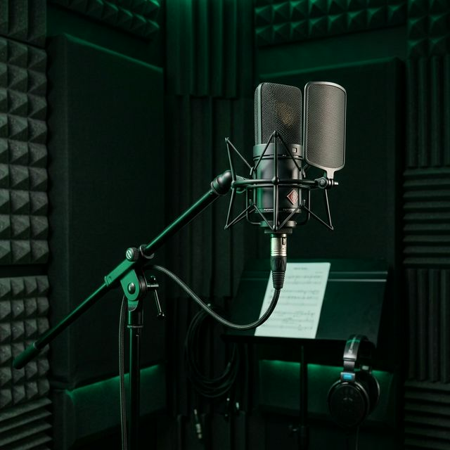

GEAR LIST
El arsenal analógico y digital que esculpe el sonido de la industria. Cada pieza seleccionada meticulosamente.
Microfonía

Sony C-800G
El estándar de oro para voces urbanas y pop. Brillo sedoso inigualable.
Neumann U87 Ai
El todoterreno clásico. Cuerpo, presencia y fidelidad absoluta.
Shure SM7B
El arma secreta para flows agresivos y dinámicos extremos.
Outboard & Preamps
Avalon VT-737sp
Canal tubular con EQ y compresor óptico. El sonido cálido que buscas en cada toma.
Neve 1073 DPA
Los transitorios más legendarios. Punch británico inconfundible.
Universal Audio 1176LN
Control rápido, agresivo en las voces, pegamento en las baterías.
Tube-Tech CL 1B
Compresión óptica suave, el secreto mejor guardado para voces de nivel Billboard.
Monitoreo
Focal Trio11 Be
La verdad absoluta en el rango completo. Bajas frecuencias sin mentiras, para el trap y reggaeton definitivo.
Yamaha NS-10M
Si suena bien aquí, sonará bien en todos lados. El estándar de la mezcla clínica.